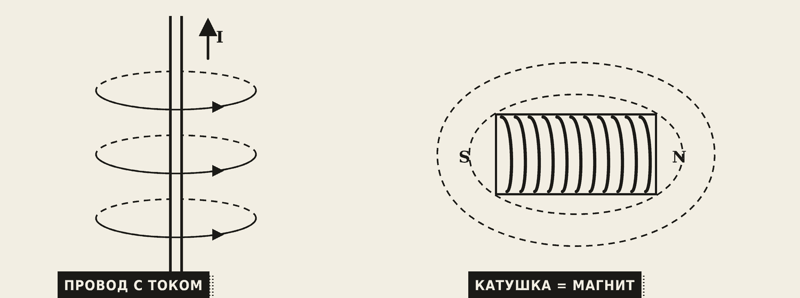
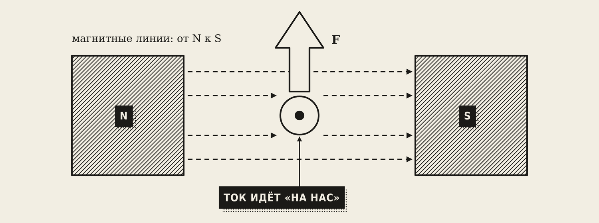
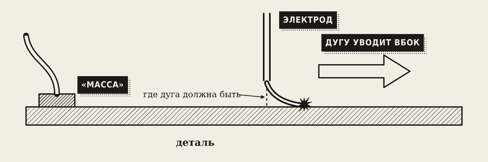
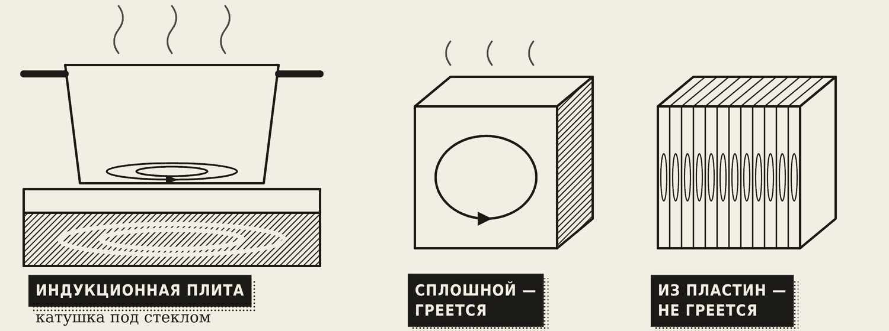
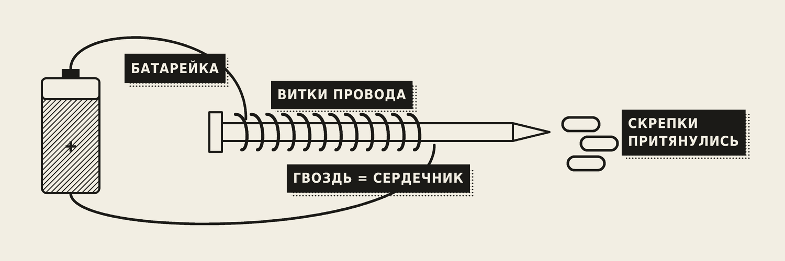
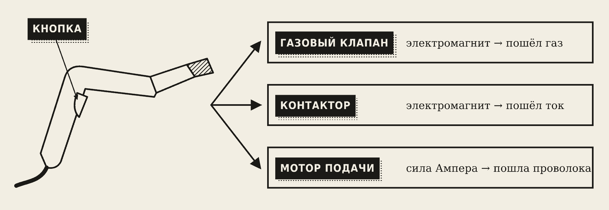
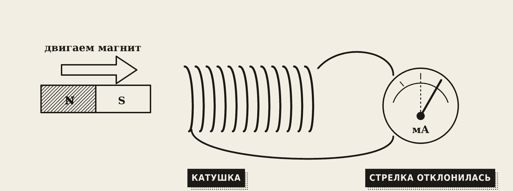
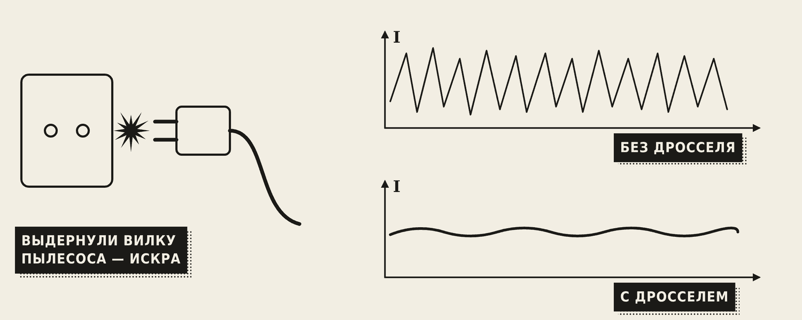

1. Магнитное поле тока

Вокруг любого провода с током есть магнитное поле. Его линии — кольца вокруг провода. Положите компас рядом с проводом аккумулятора автомобиля и включите стартер — стрелка отклонится.
Правило буравчика (штопора): если вкручивать штопор по направлению тока, ручка покажет, куда направлены линии поля.
Свернём провод в катушку — поля витков сложатся, и катушка станет похожа на магнит с полюсами N и S. «Сила» катушки (магнитодвижущая сила, МДС):
F = I · w
где I — ток, w — число витков. Больше витков или больше ток — сильнее магнит.
Для расчётов есть две величины: магнитная индукция B — сила поля в точке, в теслах [Тл]; магнитный поток Ф = B · S — сколько поля проходит через площадку S, в веберах [Вб].
2. Сила Ампера и магнитное дутьё

На провод с током в магнитном поле действует сила Ампера:
F = B · I · l, [Н]
где l — длина провода в поле. Направление силы находят правилом левой руки: линии поля входят в ладонь, четыре пальца — по току, отогнутый большой палец покажет, куда толкает провод.
Сила Ампера крутит все электродвигатели: вентилятор, дрель, стиральную машину, механизм подачи проволоки сварочного полуавтомата. Она же двигает диффузор динамика.

Магнитное дутьё — та же сила Ампера, но вредная для сварщика. Сварочный ток создаёт вокруг детали магнитное поле, и оно отклоняет дугу вбок. Чаще бывает на постоянном токе, у края детали, рядом с «массой».
Что помогает:
- переставить «массу» или подключить её с двух сторон;
- варить короткой дугой и на меньшем токе;
- наклонить электрод в сторону дутья;
- перейти на переменный ток.
3. Магнитные материалы и вихревые токи
Ферромагнетики — железо, сталь, никель — сильно намагничиваются. Их делят на два вида:
- Магнитомягкие легко намагничиваются и легко размагничиваются. Из них делают сердечники трансформаторов и двигателей.
- Магнитотвёрдые остаются магнитами надолго: магнит на холодильнике, магнитный угольник сварщика.
Гистерезис — сталь «помнит» намагниченность и не сразу её теряет. Отвёртка, которую подержали у магнита, сама начинает притягивать шурупы.

Вихревые токи — круговые токи, которые меняющееся магнитное поле наводит внутри сплошного куска металла.
- Вред: греют сердечники трансформаторов и двигателей. Поэтому сердечники набирают из тонких изолированных пластин.
- Польза: индукционная плита, индукционный нагрев и закалка, подогрев сварных швов.
4. Электромагнит

Электромагнит — катушка со стальным сердечником. Есть ток — притягивает, нет тока — отпускает. Сделайте сами: обмотайте гвоздь проводом в 30–50 витков, подключите к батарейке — гвоздь начнёт притягивать скрепки.
Магнит сильнее, если больше витков или больше ток.

Где работают электромагниты: электрозамок домофона, кран-магнит на металлобазе, реле и контакторы. В сварочном полуавтомате нажатие кнопки на горелке включает три устройства: электромагнитный газовый клапан (пошёл газ), контактор (пошёл ток) и мотор подачи (пошла проволока).
5. Электромагнитная индукция

В 1831 году Майкл Фарадей открыл: если магнитный поток через катушку меняется, в ней появляется ЭДС. Это электромагнитная индукция. Двигаете магнит в катушке — стрелка прибора отклоняется. Магнит остановился — тока нет.
e = w · ΔФ / Δt
ЭДС тем больше, чем больше витков w и чем быстрее меняется поток.
Правило Ленца: индукционный ток всегда мешает тому, что его вызвало. Правило правой руки показывает направление тока в проводе, который движется в поле.
Примеры: динамо-фара велосипеда, генераторы Иркутской ГЭС, трансформатор, беспроводная зарядка телефона.
6. Самоиндукция и дроссель

Самоиндукция — катушка мешает резкому изменению собственного тока. Когда ток пытается резко исчезнуть, катушка создаёт ЭДС, которая старается его поддержать:
e = L · ΔI / Δt
L — индуктивность катушки, в генри [Гн]. Пример: если выдернуть вилку работающего пылесоса, между вилкой и розеткой проскакивает искра — это ЭДС самоиндукции обмоток двигателя.
Взаимоиндукция — ток одной катушки наводит ЭДС в соседней. На этом работает трансформатор.
Дроссель в сварочной цепи — катушка, которая сглаживает сварочный ток: она не даёт току резко скакать. Дуга горит стабильнее, брызг меньше.
Словарик
- Магнитная индукция B — сила магнитного поля, в теслах.
- Сила Ампера — сила, с которой поле действует на провод с током.
- Магнитное дутьё — отклонение сварочной дуги магнитным полем.
- Вихревые токи — круговые токи внутри сплошного металла в меняющемся поле.
- Электромагнит — катушка со стальным сердечником.
- Электромагнитная индукция — появление ЭДС при изменении магнитного потока.
- Индуктивность L — способность катушки противиться изменению тока, в генри.
- Дроссель — катушка, которая сглаживает ток.
Эталоны в тетрадь
Перепишите в тетрадь по билетам — каждый эталон на отдельную страницу, с рисунком и строкой «Мой пример».
Магнитное поле тока
Магнитное поле тока. Правило буравчика. Поле катушки. Магнитная индукция и поток.
- Вокруг провода с током есть магнитное поле. Его линии — кольца вокруг провода. Компас рядом с таким проводом отклоняется.
- Правило буравчика (штопора): если вкручивать штопор по направлению тока, ручка покажет, куда идут линии поля.
- Катушка с током ведёт себя как магнит: у неё есть полюса N и S. Её «сила» (МДС) — F = I·w (ток × число витков).
- Магнитная индукция B — сила поля, в теслах [Тл]. Магнитный поток Ф = B·S, в веберах [Вб].
Сила Ампера, магнитное дутьё
Сила Ампера, правило левой руки. Где используется. Магнитное дутьё дуги.
- На провод с током в магнитном поле действует сила Ампера: F = B·I·l, [Н].
- Правило левой руки: линии поля входят в ладонь, 4 пальца по току — большой палец покажет, куда толкает провод.
- Где работает: все электромоторы (вентилятор, дрель, стиральная машина, подача проволоки), динамики колонок.
- Магнитное дутьё — сила Ампера отклоняет сварочную дугу, чаще на постоянном токе. Меры: переставить «массу» или подключить её с двух сторон, короткая дуга, меньше ток, наклон электрода против направления дутья, переменный ток.
Магнитные материалы и вихревые токи
Ферромагнитные материалы, гистерезис, магнитомягкие и магнитотвёрдые. Вихревые токи.
- Ферромагнетики (железо, сталь, никель) сильно намагничиваются.
- Магнитомягкие легко намагничиваются и размагничиваются — сердечники трансформаторов и моторов. Магнитотвёрдые остаются магнитами — магнит на холодильнике, магнитный угольник сварщика.
- Гистерезис — сталь «помнит» намагниченность и не сразу её теряет (как намагниченная отвёртка). Перерисуйте петлю гистерезиса из лекции.
- Вихревые токи — токи внутри сплошного металла. Вред: греют сердечник, поэтому его делают из тонких пластин. Польза: индукционная плита, индукционный подогрев сварных швов.
Электромагнит
Электромагнит: устройство и применение.
- Электромагнит = катушка + стальной сердечник. Есть ток — притягивает, нет тока — отпускает. (Рисунок «гвоздь + провод + батарейка».)
- Магнит сильнее, если больше витков или больше ток.
- Примеры: электрозамок домофона, кран-магнит, реле, контактор и газовый клапан сварочного полуавтомата.
Электромагнитная индукция
Явление и закон электромагнитной индукции, правило Ленца, правило правой руки. Генераторы.
- Электромагнитная индукция: если магнитный поток через катушку меняется, в ней появляется ЭДС (Фарадей, 1831).
- Формула: e = w·ΔФ / Δt — чем больше витков и чем быстрее меняется поле, тем больше ЭДС.
- Правило Ленца: индукционный ток мешает тому, что его вызвало. Правило правой руки показывает направление тока.
- Примеры: динамо-фара велосипеда, генераторы Иркутской ГЭС, трансформатор, беспроводная зарядка телефона.
Самоиндукция и дроссель
Самоиндукция и взаимоиндукция, индуктивность. Назначение дросселя в сварочной цепи.
- Самоиндукция — катушка мешает резкому изменению своего тока: e = L·ΔI / Δt. Индуктивность L измеряется в генри [Гн].
- Пример: искра, когда выдёргиваешь вилку работающего пылесоса.
- Взаимоиндукция — ток в одной катушке создаёт ЭДС в соседней. На этом работает трансформатор.
- Дроссель в сварке — катушка, которая сглаживает сварочный ток: дуга стабильнее, брызг меньше.
Проверь себя
Сначала ответьте сами — в тетради или вслух. Потом нажмите на вопрос, чтобы увидеть ответ.
1Как сделать электромагнит сильнее?
Увеличить число витков или ток, использовать стальной сердечник.
2Что такое магнитное дутьё и как с ним бороться?
Отклонение дуги силой Ампера. Переставить «массу» или подключить её с двух сторон, короткая дуга, меньше ток, наклон электрода, переменный ток.
3Зачем сердечник трансформатора набирают из пластин?
Чтобы уменьшить вихревые токи и нагрев.
4Когда в катушке появляется ЭДС индукции?
Только когда меняется магнитный поток через неё — например, когда двигают магнит.
5Почему искрит вилка, если выдернуть её из розетки при работающем пылесосе?
Самоиндукция: обмотки двигателя стараются поддержать ток и создают ЭДС.
6Зачем в сварочной цепи дроссель?
Сглаживает сварочный ток: дуга стабильнее, меньше брызг.
Ответы к «Проверь себя»
- Увеличить число витков или ток, использовать стальной сердечник.
- Отклонение дуги силой Ампера. Переставить «массу» или подключить её с двух сторон, короткая дуга, меньше ток, наклон электрода, переменный ток.
- Чтобы уменьшить вихревые токи и нагрев.
- Только когда меняется магнитный поток через неё — например, когда двигают магнит.
- Самоиндукция: обмотки двигателя стараются поддержать ток и создают ЭДС.
- Сглаживает сварочный ток: дуга стабильнее, меньше брызг.